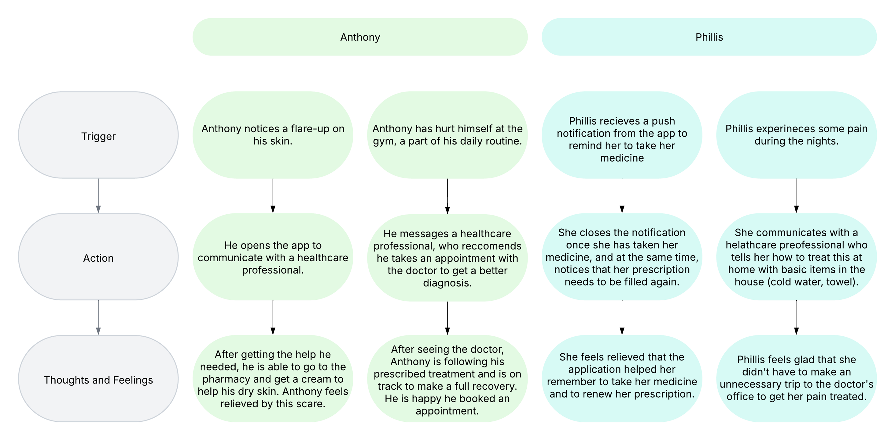
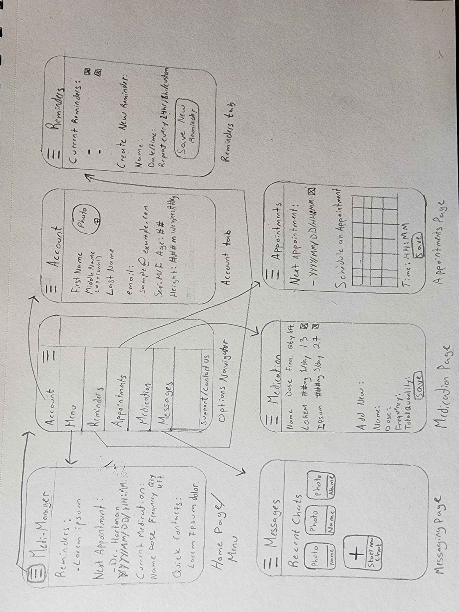
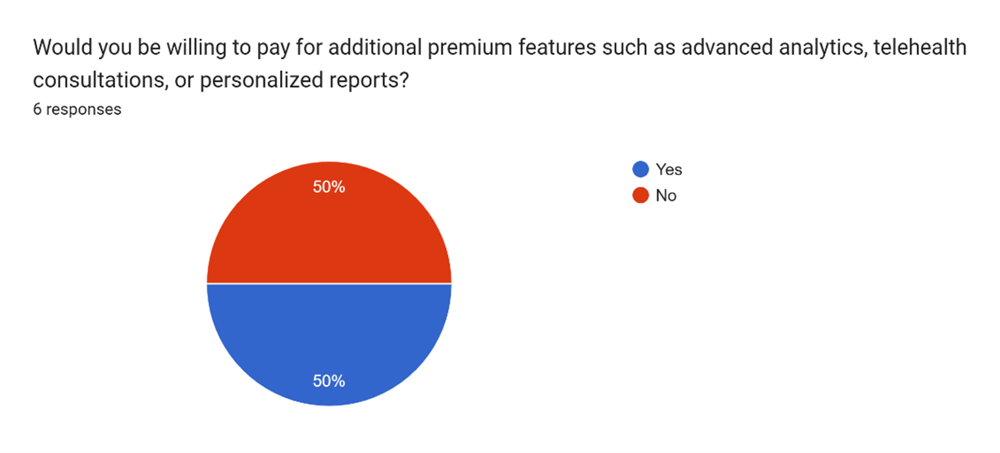
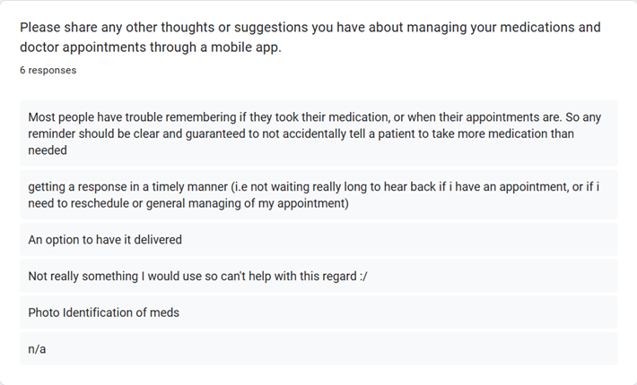

Medi Manage Report
Table of Contents
User Research and Persona Creation
User Research
To gather insights on the target users’ needs, challenges, and behaviours, there are multiple strategies that I can use, each with its advantages and disadvantages, as well as limitations.
User Needs
To gather information about the users’ needs, I will conduct a survey analysis. The survey will be conducted online; there is no need to conduct an in-person survey for the purpose of this application. Next, the survey will provide me with important information for both the design of the app itself as well as the creation of the personas: the survey collects information that helps label the target demographic of the app as well as provide a list of potentially significant features to include.
Additionally, although it is not useful for this case, another possibility for collecting user data is the use of case studies or collecting information through published literature. By analysing already known data, it is easier to make some predictions (by using data processing techniques) to get a preliminary idea of the users’ needs for certain demographics (age, region, ethnicity, etc.).
Challenges
Some challenges related to collecting the user needs are getting the survey to reach the most diverse audience, processing the data, getting enough responses to the survey as well as having a complete survey.
It is important to reach a diverse audience when conducting the survey because it is important to account for any differences in culture that may affect the users’ behaviour.
Next, once the survey data is collected, processing it and getting conclusions from it is also difficult; in the case of answers that are typed by users, they need to be manually processed to analyse the information present. When answers are given from a choice of answers, it is easy to observe the frequency of each answer, but in the case of paragraphs, the content and structure may vary for each respondent, which ends up creating inconsistencies in the data’s presentation.
Lastly, it is important to both have enough respondents to the survey as well as a complete survey. If too few respondents answer the survey, it is difficult to get an overview of popular features to add. Also, if the survey is incomplete, it is more difficult to get the respondents to answer another survey; it is time consuming for both the researcher and the respondents.
Personas
After conducting the survey, two contrasting, personas stuck out:
- The younger, 24-year-old user
- The older, 70-year-old user
By analysing the data from the respondents, the focus of the app, for these personas, is the aspect of communication with a healthcare professional, scheduling online appointments as well as their reminders, and reminders and renewals of prescriptions online. There weren’t any exceptional cases amongst the personas; none of the results resulted in personas that had needs that were too specific or beyond the scope of this application. The first persona is a 24-year-old male who is recently graduated, and the second persona is a 70-year-old retired female. This data is from the surveys, and while not every respondent was a 24-year-old male or a 70-year-old female, most of the respondents fell into either one of these two categories.


User Journey Mapping
Next, to showcase a few use cases, as an overview from the user’s standpoint, a user journey map is made. To best display the actions a user might take if they had specific problems with the application. In this case, both personas are the center of attention for this user journey map, but any user will find a similar experience when using the app. The only differences may be in the resulting emotions, since they vary from person to person. The different scenarios range from taking an appointment with a doctor, through the app, using the chat feature, notifying the user to take medication and reminding the user to renew their prescriptions.
Wireframes and Prototype Design
Wireframes
These initial sketches showcase what I imagined the application would look like. Although in terms of looks it is preliminary, the functionality behind each action is properly showcased by the various arrows in the diagram. Each arrow points to the new screen presented to the user once the corresponding option is clicked.
Prototypes
This is a side-by-side of the prototype, based on the wireframe created. From the wireframe to the prototype, there was an improvement made to the layout of certain features: in the appointment scheduler, a new screen appears when a date is chosen. This makes the appointment scheduler less cluttered.
Colour Palette
I chose a monochromatic colour palette for the interface because it provides the user with a minimalistic. Some more colour could be added as accents to highlight some key features of the app: the buttons can have a light blue highlight around them to clearly indicate where the next step should be. The specific choice for blue, in this example, is the “calm” nature of blue: it isn’t a harsh colour like red, for example.
Usability Testing
An example of a usability testing plan would look like the following:
After a month or two of use of the application, users would receive a survey that inquires on
their experience and how they feel about the looks of the application and how it functions.
This part of the survey gives information regarding the user experience of the application.
In the same survey, I will also ask about any improvements the users would like to see brought to the
application or share any known issues they have experienced. This will help with future development of
the application. All this data will be collected by the means of a survey that will appear as a
prompt when opening the application.
Since the survey, this time, will contain more “long” answers, there are two ways of handling this data:
- People manually filter and label the responses.
- Use a machine learning model to help sort the responses into different categories: improvement, customer satisfaction, overall rating.
Once the data is separated, it becomes much easier to analyze and pinpoint what are the most urgent issues to tackle and which issues can be addressed at a later stage.
Reflection
Identifying Needs
The user experience design process helped me identify user needs, firstly, by having a basic
idea of my target audience. After conducting a survey, it was easier to identify the main
age groups targeted by the app. Once the top demographics were identified, it was easier
to design an application that would most likely fulfill the needs for each. Younger demographics
tend to enjoy more minimalistic approaches to interfaces; they’re less busy, they don’t
overwhelm the user with features, and they look nice all while maintaining full functionality.
On the other hand, with an older demographic (generation X, or even baby boomers), a simple user
interface is preferred since it is less likely to confuse the user. The simple layout and design
are mostly intuitive and provides a smooth experience for the user.
In this case, based on the survey I conducted, I identified some extra features to include in future
iterations of this application.


Based on the survey I conducted, on top of the features in this application, users would like to see some extra features in later updates. The most requested feature is the ability for the application to send push notifications to the user without needing the app to be open. This was highly requested since it doesn’t force the user to constantly have the application open, instead, they can be notified or reminded at the time of the reminder (instead of being reminded every time the application is opened).
Next, based on results from the survey, the next two most requested features are related to existing functionalities of the application:
- Alerts for refills for monthly prescriptions
- Secure messaging with healthcare professionals
In future developments, the application will inform the users, with notifications, when their prescriptions are running low and will need to be refilled.
When the users will be interacting with the messaging part of the application, it is very important to keep the communication between both parties secure, to prevent data breaches and information leaks. From the initial release of this application, while secure communication is not guaranteed, the application will not have the messaging feature enabled to not be enabled. This is to prevent any issues with the security of users and their data.
Lastly, from the short-answer questions, a final future improvement would be to include the option to deliver medication, either scheduled or as a one-time delivery. This would be helpful for the users who aren’t able to always make their way to pick up their medication, or for the users that don’t have enough time in the day to do so.
Challenges
When designing the prototype for this app, it was clear that one of the many challenges would be to make the interface intuitive, and easy-to use for all users. I can’t make the interface keeping in mind only the younger users, even though they are most likely to be the people to use the application for the amount of time. I can’t make the interface considering the older users either, even though they are most likely to be the most frequent users. Each age group for the users has its pros and cons; younger users may not be bothered by smaller text and more interactable, whereas older users may prefer a simpler interface with larger text and buttons and fewer buttons (to minimize the risks of accidentally pressing something).
Another challenge when designing the app was to make each part of the user experience operate with as little instruction as possible: I did not want to have lots of text on the page to instruct my user with what the page is used for. Instead, each page the user visits is dedicated to display only a few items. This, paired with the title of the page gives the user a good enough understanding of what the current page is dedicated towards.
Improvements
For the future, to improve the application, first on the “to do” list is work with the gathered feedback related to the user interface and the user experience while using the app. If there are any issues with the layout of the app, they need to be resolved sooner rather than later, since a negative user experience will lead to a reduced usage rate of the app, which is not good in the long term.